PHP con Apache
El formulario envía los campos por POST. El código comprueba el método, valida el correo y el taller, guarda la inscripción en $_SESSION y redirige con un 302 a la página de confirmación.
BITÁCORA DE APRENDIZAJE / SEMANA 09
Una inscripción a talleres y un registro de contactos. Dos prácticas para seguir una petición desde el navegador hasta el código que la valida, guarda los datos y construye la respuesta.
Explorar mis trabajos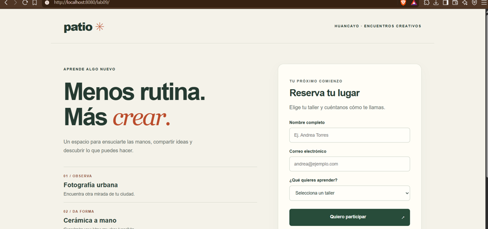
Después de trabajar con componentes y estado en React, empecé la unidad de desarrollo fullstack. El punto de partida fue seguir qué ocurre cuando el navegador envía un formulario y el servidor debe decidir cómo responder.
Inscripción a talleres con una versión en PHP y otra en JSP.
02 / PRÁCTICA GRUPALValidación, listas por sesión y pruebas de solicitudes HTTP.
El diagrama resume el flujo estudiado. En el laboratorio se usó localhost, que apunta al propio equipo.
El reto individual fue desplegar dos versiones del mismo formulario. Patio permite elegir un taller, enviar nombre y correo y ver una confirmación con la actividad seleccionada.
EXPLORAR EL CÓDIGOSemana_9_practica_1El formulario envía los campos por POST. El código comprueba el método, valida el correo y el taller, guarda la inscripción en $_SESSION y redirige con un 302 a la página de confirmación.
La versión JSP recibe los parámetros mediante el objeto request. La confirmación muestra la inscripción de demostración conservada en la sesión. Las capturas muestran PHP en el puerto 8080 y JSP en el 8081.
7 capturas. Abre una y recorre la galería con las flechas.
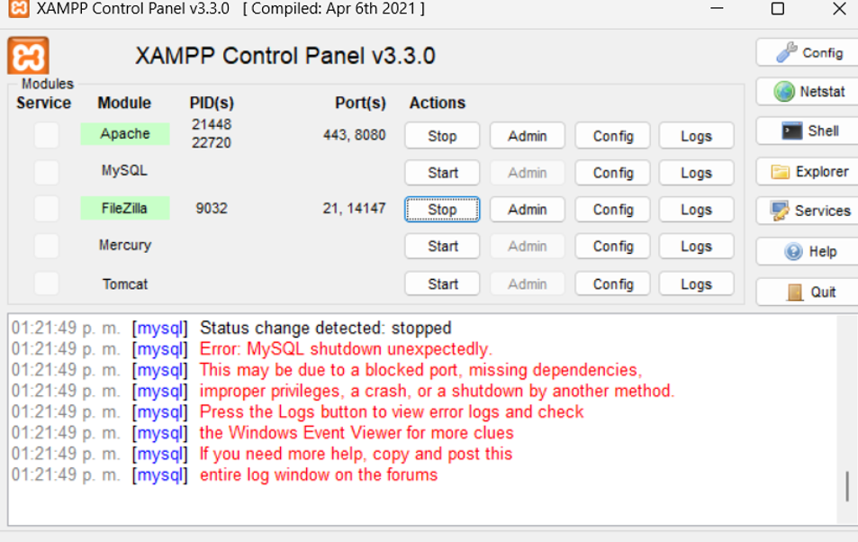
El panel de XAMPP muestra Apache activo en el puerto 8080 y un error de arranque de MySQL.
La portada de Patio reúne los talleres y el formulario con nombre, correo y selección de actividad.
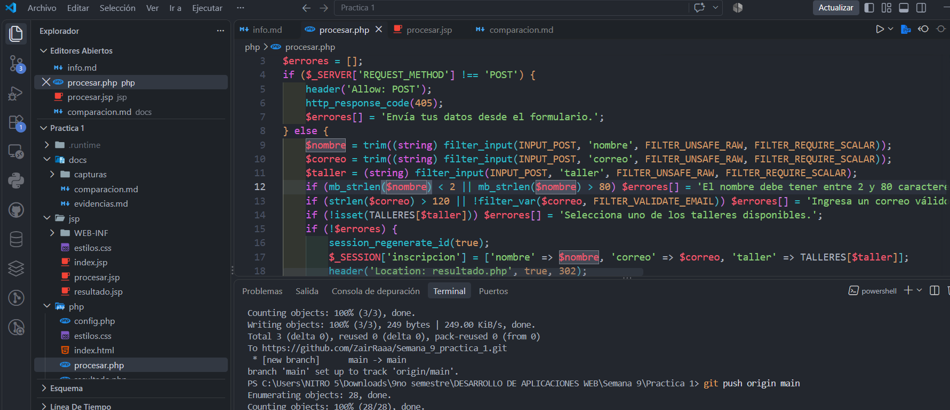
El código comprueba el método, valida los campos y guarda la inscripción antes de redirigir.
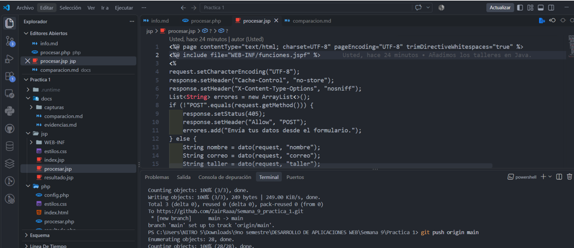
El archivo JSP muestra la lectura de parámetros de la solicitud y el rechazo de métodos distintos de POST.
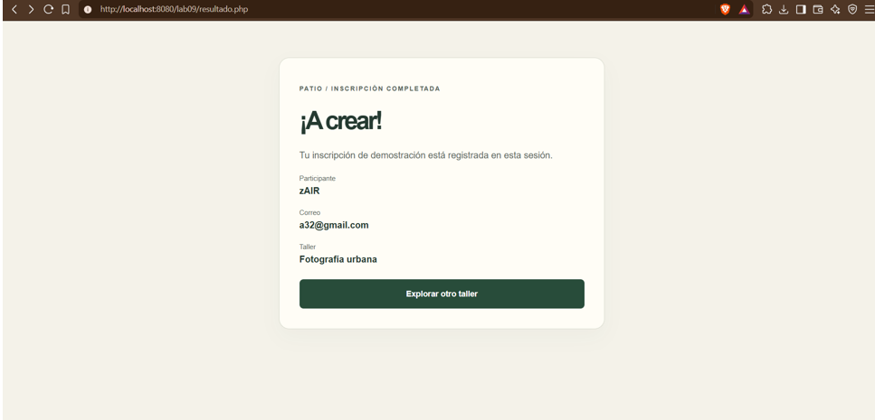
La página resultado.php confirma la inscripción de demostración y muestra el taller elegido.
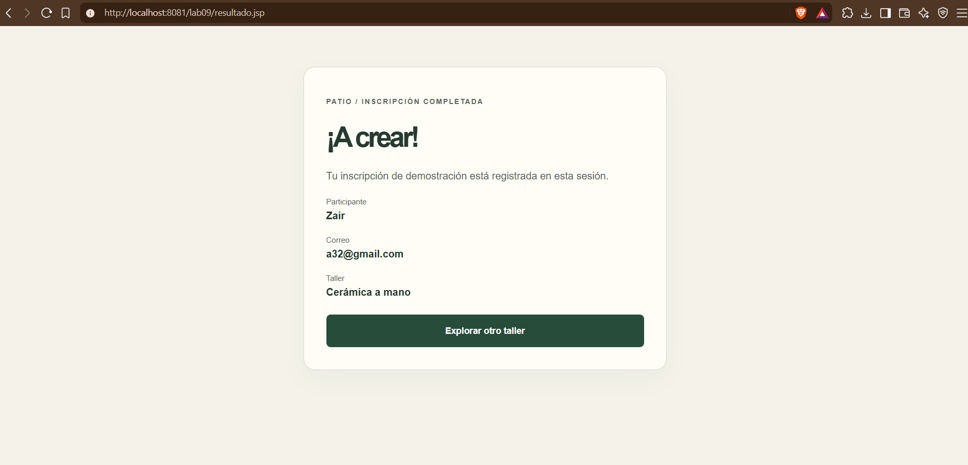
La página resultado.jsp muestra la confirmación de una inscripción en la versión servida por Tomcat.
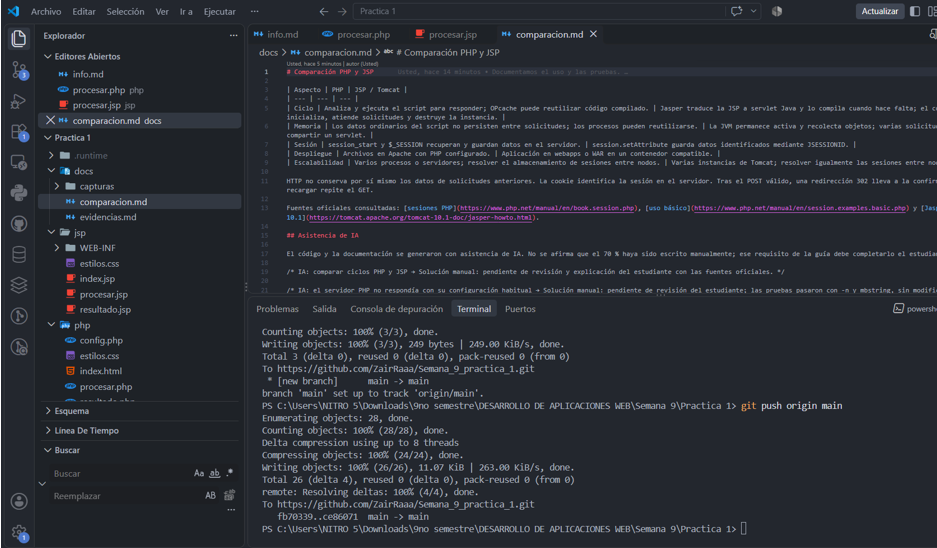
En VS Code se ve la estructura del proyecto y el documento que compara PHP con JSP.
En equipo con Ángel Tocas Anglas, desarrollamos un registro de contactos en PHP y JSP. Me encargué del módulo PHP y el despliegue en XAMPP/Apache; Ángel trabajó el módulo JSP, el despliegue en Tomcat y las pruebas.
EXPLORAR EL CÓDIGOSemana_9_practica_2PHP recibe el formulario por POST y usa $_SESSION para mantener la lista de contactos. En la versión JSP, Tomcat procesa el registro y la vista presenta la tabla con JSTL, según el informe.
Las capturas de PHP muestran una entrada de prueba con etiquetas de script presentada como texto y el aviso 405 al acceder por GET. El primero ilustra el escape de salida; el segundo comprueba la restricción del método.
8 capturas. Abre una y recorre la galería con las flechas.
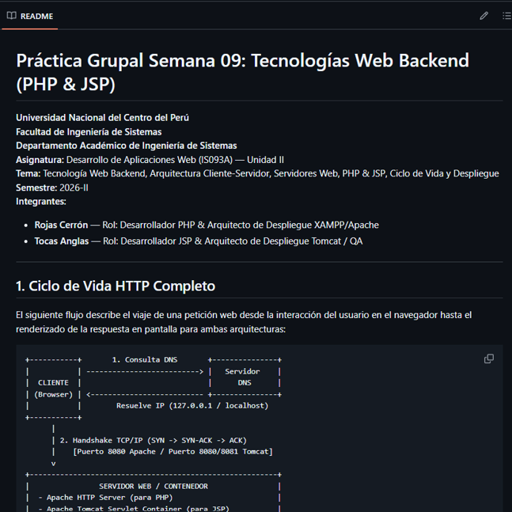
El README grupal presenta los roles y un diagrama del recorrido de una petición.
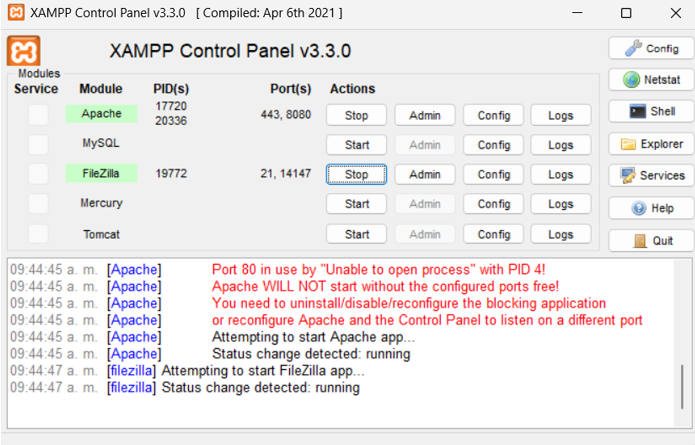
XAMPP muestra el aviso por el puerto 80 ocupado y Apache activo en el 8080.
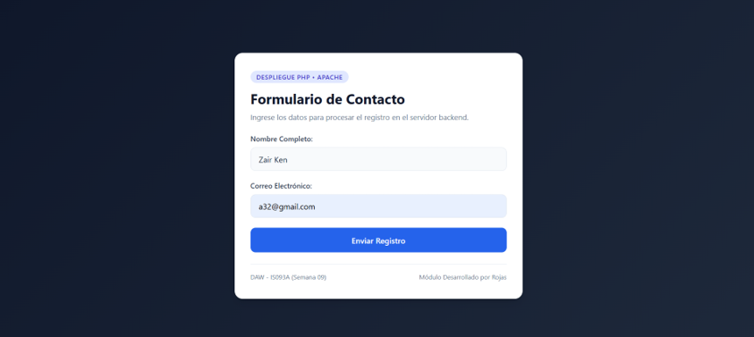
El formulario solicita nombre y correo antes de enviar los datos al servidor.
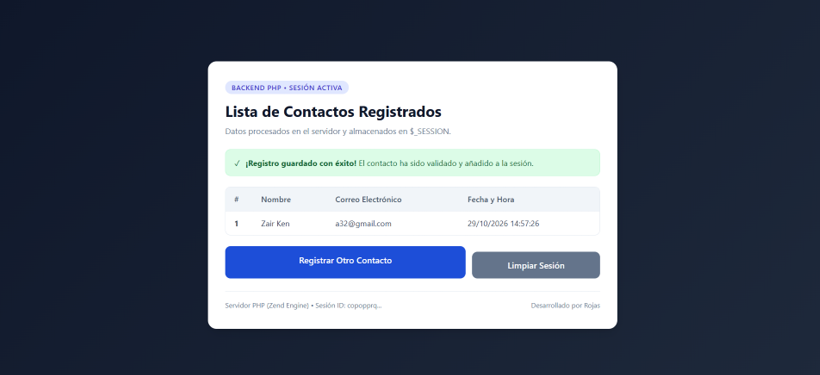
La respuesta de PHP presenta los contactos guardados en la sesión y permite iniciar otro registro.
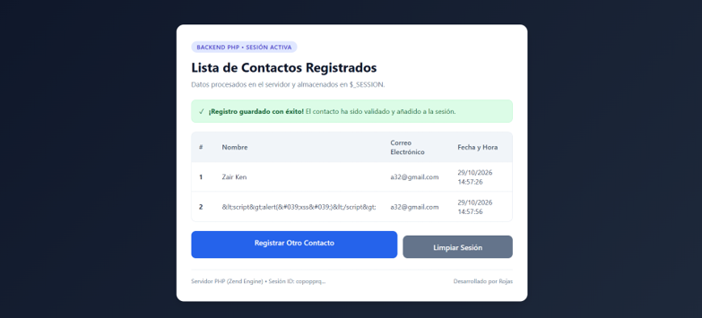
La tabla presenta una entrada con etiquetas de script como texto, sin interpretarla como código.
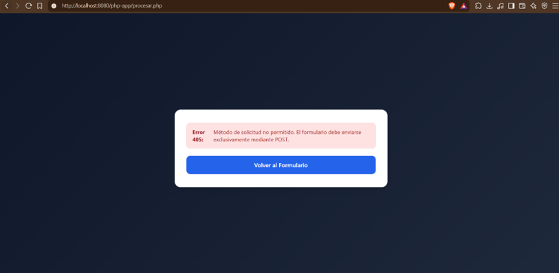
El procesador muestra el error 405 cuando se abre directamente sin enviar el formulario mediante POST.
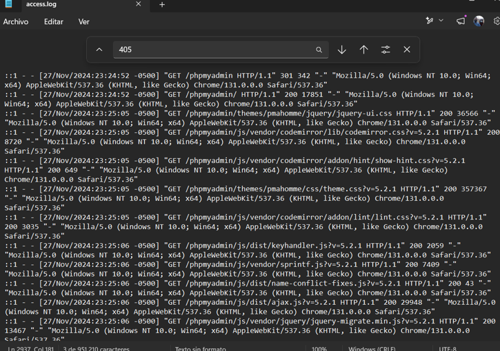
La captura muestra access.log, donde se revisan los métodos, rutas y códigos de las solicitudes.
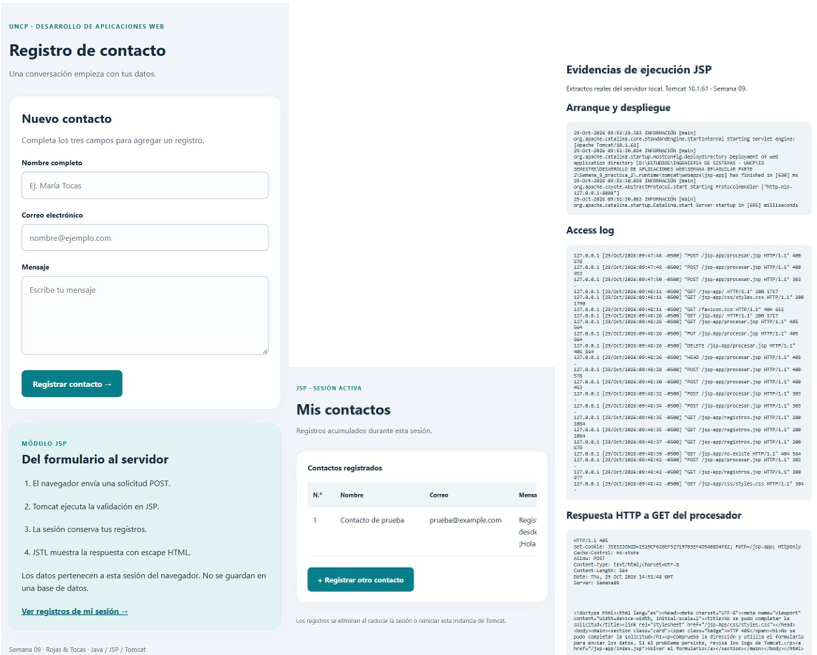
El montaje reúne el formulario, la tabla JSP y las trazas de arranque y respuesta de Tomcat.
Comparé cómo cada entorno despliega la aplicación, procesa los datos del formulario y recupera el estado de la sesión.
| Aspecto | PHP | JSP |
|---|---|---|
| Despliegue local | Apache en XAMPP; archivos bajo htdocs. | Tomcat; aplicación bajo webapps. |
| Procesamiento | El intérprete ejecuta el script que atiende la petición. | El contenedor traduce y compila la página como servlet cuando corresponde. |
| Datos y sesión | filter_input() y $_SESSION. | request.getParameter() y objeto session. |
| Escape en HTML | htmlspecialchars() para datos insertados como texto. | La guía propone <c:out> al mostrar datos en la vista. |
Entendí por qué el servidor debe comprobar el método y validar los datos aunque el navegador ya revise el formulario. Cada petición puede llegar por un camino distinto.
Validar me ayuda a decidir si acepto un dato. Escaparlo al mostrarlo hace que el navegador lo lea como texto dentro del HTML.
Revisar el puerto activo, la URL y el código de respuesta me ayuda a distinguir un problema de despliegue de un error en el código que procesa el formulario.
Entrada elaborada a partir de la guía individual, la guía grupal y las 15 capturas aportadas.